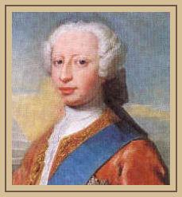

The Beehive
La ruche
From Hogg's Jacobite Relics volume II, Appendix "Jacobite Songs", N°1, page 399
Tune - Mélodie"Plain Truth" or "Charlie's Welcome"
(See Hogg's "Jacobite Relics" 1st Series N°52, page 122, 1821)

Frederick Prince of Wales, (1707- 1751)

|
THE BEE HIVE 1. There was an old woman that had a bee-hive, And three master bees about it did strive ; And to each master bee she did give a name . It was for to conquer each other they came. With a fal de ral, fal de ral, well may we sing, With a fal de ral, fal de ral, well may we sing, With a fal de ral, fal de ral, well may we sing, With a fal de ral, fal de ral, hey, such a king! 2. There was one they called Geordie, and one they called Fed, The third they called Jamie ; pray who was the head ?(*) Jamie and Geordie together did strive Who should be the master bee of the bee-hive. With a fal de ral, &c. 3. Says Geordie to Jamie, " I'd have you forbear, From ent'ring my hive ; if you do, I declare, My bees in abundance about you shall fly, And if they do catch you, you surely shall die." With a fal de ral, &c. 4. Says Jamie to Geordie, " 'Twas very well known Before you came hither the hive was my own, And I will fight for it as long's I can stand, For I've forty thousand brave bees at my command. With a fal de ral, &c. 5. "But you've clipped all their wings, and shorn all their backs: Their stings they hing down with a devilish relax ; But the summer will come and restore the green plain, And something may hap that will rouse them again." With a fal de ral, &c. 6. Then bee Geordie said, " Sir, I'd have you be gone Abroad with your hive, for 'tis very well known Yours is not true honey, nor gathered at noon, But sucked up abroad by the light of the moon." With a fal de ral, &c. 7. " Thou vulgar marsh bee," then said Jamie again, " For the hive have my fathers long travelled in pain ; And the whole world knows, and the old woman owns, That mine is The Bee-hive, but thine are The Drones." With a fal de ral, &c. (*) Geordie=King George II, Fred=His son Frederick, the Prince of Wales, Jamie=James Francis Stuart, the Old Pretender (see "The Jacobite King Anthem"). Source: "The Jacobite Relics of Scotland, being the Songs, Airs and Legends of the Adherents to the House of Stuart" collected by James Hogg, volume 2 published in Edinburgh by William Blackwood in 1821. |
LA RUCHE 1. Une vieille avait une ruche autrefois; Et trois reines se la disputaient à la fois; Chacune des reines avait un surnom; Et chacune voulait régner en la maison. Sur l'air du ri de ra, ri de ra, tra la la, Sur l'air du ri de ra, ri de ra, tra la la, Sur l'air du ri de ra, ri de ra, tra la la, Sur l'air du ri de ra, Ah quel drôle de roi. 2. L'une avait nom Geordie; et l'autre, Freddy, La troisième Jamie: Lequel à votre avis Dans la course au pouvoir était le mieux placé? (*) C'était entre les trois un combat acharné. Sur l'air du ri de ra, etc. 3. Geordie dit à Jamie: "Moi je t'interdis D'entrer dans ma ruche. Si je te vois ici, Mon essaim d'abeilles volera sus à toi, Et s'il te pique, tu n'en réchapperas pas." Sur l'air du ri de ra, etc. 4. Jamie dit à Geordie: "Comme chacun sait, Jusqu'à ta venue la ruche m'appartenait. Tant que je peux je défierai ton essaim. De quarante mille abeilles j'ai le soutien. Sur l'air du ri de ra, etc. 5. "Tu leur a coupé les ailes, tu les tonds Et lamentablement pendent leurs aiguillons. Mais au printemps la plaine reverdira Et peut-être alors la force leur reviendra. Sur l'air du ri de ra, etc. 6. Mais Geordie répliqua: "Vous et votre essaim, Partez à l'étranger, car chacun le sait bien, Votre miel frelaté ne fut point à midi Butiné, mais loin, à la faveur de la nuit." Sur l'air du ri de ra, etc. 7. "Jamie lui répondit "Abeille des marais, A mes pères cette ruche avait tant coûté. Tout l'univers le sait et la vieille a raison: Je possède la ruche, à toi sont les frelons." Sur l'air du ri de ra, etc. (*) Geordie=roi Georges II, Freddy=son fils Frédéric, le Prince de Galles, Jamie=Jacques François Stuart, le Vieux Prétendant (cf. "God Save the King "Jacobite). (Trad. Christian Souchon (c) 2010) |